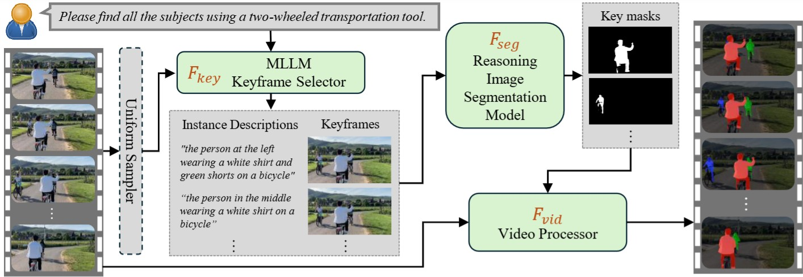
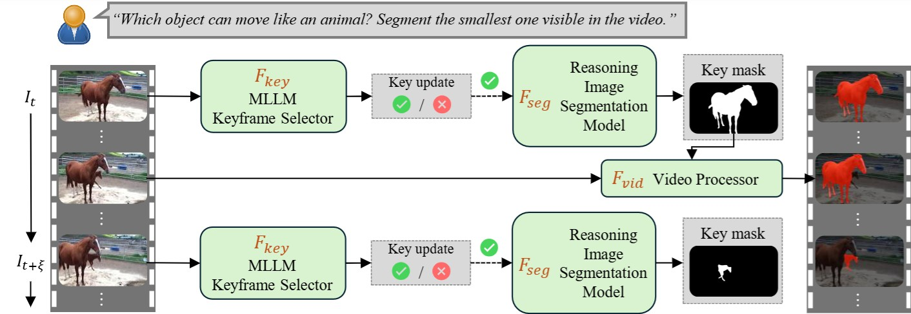

My friend and I each drove our cars to another city. He was driving a white car and leading the way in front of me, but he drove too fast and I lost him. He called me to say that he had just been waiting at a traffic light and then crossed an intersection. Which one is most likely to be my friend's car?
The mode of transportation capable of transporting the largest group of people.
The vehicle that overtakes from the left and heads in a different direction at the intersection.
American football players are fast, strong, and dexterous. Which player got his team on board with a brilliant play?
The automobile that merged into my lane abruptly and then left.
Basketball is a popular sport in the US. The team who successfully put the ball inside the basket will get two or three points, depending on the distance of the shot. Players shoot the ball behind the three-point line will get three points. Are there any players making a three-point attempt in this video? Please segment the one who successfully made the three-point shot.
If the animal were not on the right track, it would probably be intervened and corrected by human. Which one is on the wrong track?
* Temporally sensitive queries are highlighted in red.
Abstract
Reasoning Video Object Segmentation is a challenging task, which generates a mask sequence from an input video and an implicit, complex text query. Existing works probe into the problem by finetuning Multimodal Large Language Models (MLLM) for segmentation-based output, while still falling short in difficult cases on videos given temporally-sensitive queries, primarily due to the failure to integrate temporal and spatial information. In this paper, we propose ThinkVideo, a novel framework which leverages the zero-shot Chain-of-Thought (CoT) capability of MLLM to address these challenges. Specifically, ThinkVideo utilizes the CoT prompts to extract object selectivities associated with particular keyframes, then bridging the reasoning image segmentation model and SAM2 video processor to output mask sequences. The ThinkVideo framework is training-free and compatible with closed-source MLLMs, which can be applied to Reasoning Video Instance Segmentation. We further extend the framework for online video streams, where the CoT is used to update the object of interest when a better target starts to emerge and becomes visible. We conduct extensive experiments on video object segmentation with explicit and implicit queries. The results show that ThinkVideo significantly outperforms previous works in both cases, qualitatively and quantitatively.
ThinkVideo (Original): Reasoning Video Instance Segmentation
The CoT is applied to the entire video when available for reasoning instance segmentation, which leads to better performance than its online version. The offline version leverages an MLLM (e.g. GPT-4o) to generate instance-level selectivity based on the CoT reasoning. This selectivity is then passed to the reasoning image segmentation agent and video processor for instance mask tracking.

Reasoning VIS Results
My friends and I want to buy a car because we always travel by public transportation, which is inconvenient sometimes. What object(s) may be used in our previous trips? Please find all visible in the video.
Are there any subjects that overtake from my right side and stop in front of me, while I was waiting the traffic light? Please segment them.
Please segment all the visible subjects that are using some kind of transportation tool.
Last year, my roommates and I decided to have some pets together. What is/are the pets in the video?
ThinkVideo (Online): Online Reasoning Video Object Segmentation
Our approach can handle online video streams where future frames have yet to be observed. This is useful when the user would like to update the object of interest, if an object that better aligns with the query appears. This framework adopts a greedy strategy to periodically update the selected keyframe when an incoming frame satisfies the query requirement, then using the keyframe to track in the following frames. When none of the previous frames is selected as a keyframe, the model outputs nothing.

Online Reasoning VOS Results
Which subject is trying to climb using the pole on the right side?
My friends and I are interested in horse racing, so we raise some horses together. Mine is a small, brown, and energetic horse. Which one is most likely to be mine?
Monkeys are social animals. The elder individual need to take care of the younger ones. Please segment the one that is currently taking care of others.